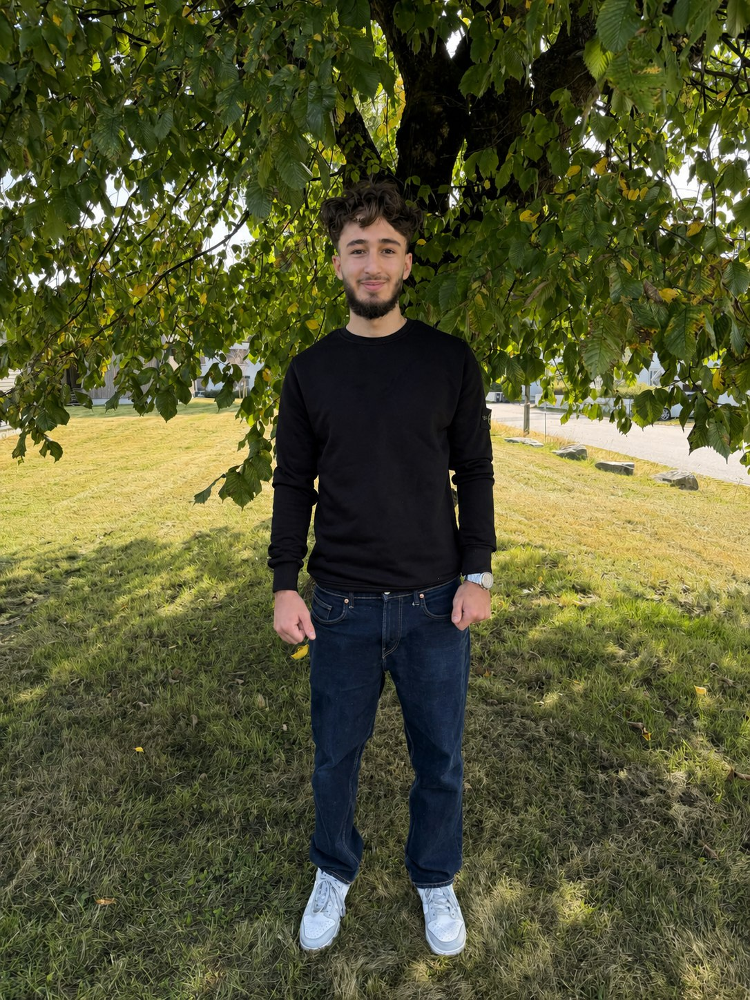

01 / 06
Hussein Akbar
Frontend- og backendutvikling
Jeg har bygget grunnleggende utviklingskompetanse gjennom studiet og arbeider selvstendig med Codecademy og LeetCode for å utvikle meg videre. Jeg er spesielt interessert i systemutvikling og AI, og bidrar med teknisk nysgjerrighet og sterk læringsvilje.
LinkedIn[GitHub-lenke]